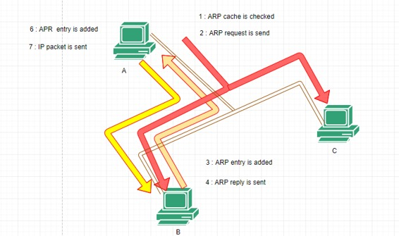
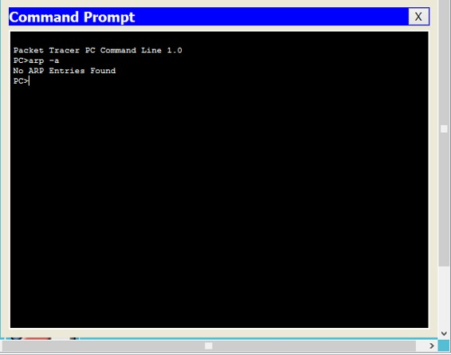
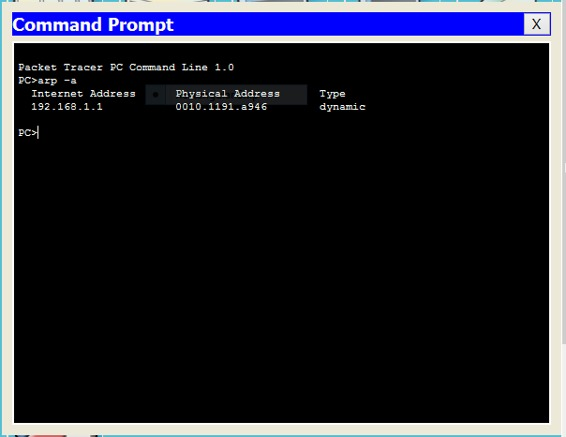
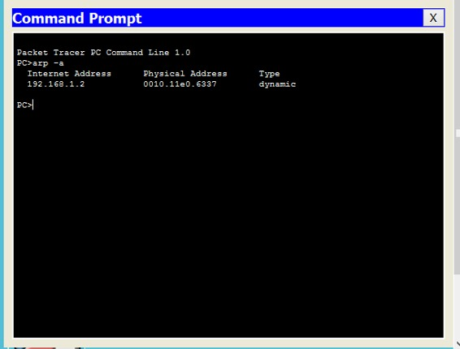
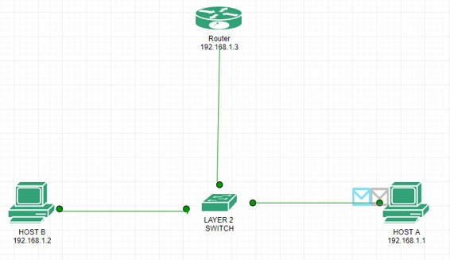
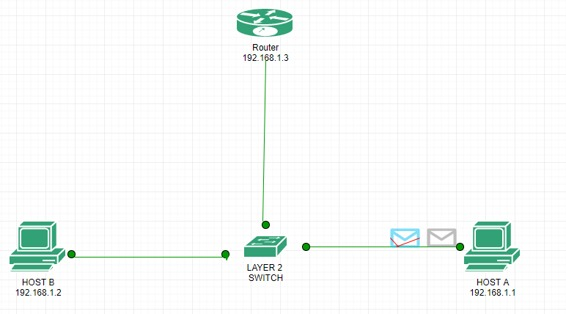
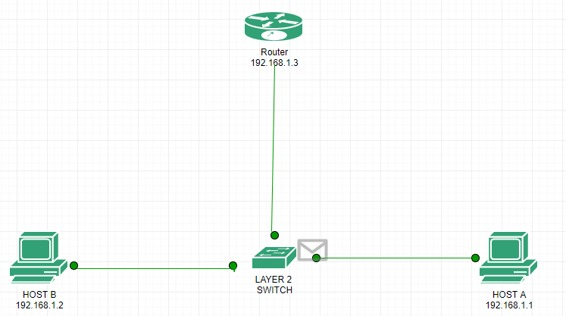
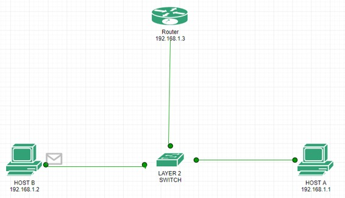

Prerequisite – How ARP works?
To transfer a packet from source to destination both destination MAC address and IP address should be known. If the destination MAC address is not present then first ARP will be resolved first then the packet will be delivered to destination host.
There are simple rules for a packet flow in a network:
- If the destination is present in the same network of the source host then the packet will be delivered directly to the destination host using MAC address.
- Within a network, the packet will be delivered on the basis of MAC address.
- MAC address never crosses its broadcast domain.
Now, first we have to take an idea about ARP.
Address Resolution Protocol –
Address Resolution Protocol is a layer 2(Data link layer) protocol which is used to find MAC address of the known IP address.
There are some important terms associated with ARP:
ARP cache is a table maintained by ARP which contains IP address with its associated MAC address and type. If MAC address is learned dynamically then the type will be dynamic and if MAC address is added manually then type will be static.

ARP request is a broadcast message generated by the source to find the destination MAC address if the ARP is not resolved initially.
ARP reply is a unicast message from destination to source device containing the destination MAC address.
Explanation –

The steps included in ARP process are as follows :-
When a source wants to send a packet to destination device then,
- The source ARP cache is check if the ARP is resolved or not. If the ARP is not resolved, it puts the packet on hold and generates an ARP request.

If the ARP is already resolved then the packet will be delivered to destination host.
- The ARP request is broadcast all over the network to find out the device having destination IP address.
Note – If the destination is present in the same network then ARP will find out destination MAC address but if it is present in different network then ARP will find out default gateway MAC address.
- When the device having the destination IP address receives the ARP request, it updates it’s own ARP cache.
- The destination host machine generates an ARP reply containing it’s own MAC address.
- Now,the device having the source IP address receives the ARP reply and update it’s ARP cache.

- Since,both source and destination IP address and MAC address are available now therefore the packet is delivered to the destination host.
Now, we have taken an idea about the ARP protocol. Let’s see about the packet flow.
Now we will understand how the packet is delivered to destination when the destination is present in same network(network of the source).

Here is the topology in which host A having IP address 192.168.1.1, host B having IP address 192.168.1.2 and the router having IP address 192.168.1.3 on interface fa0/0.
Now how source device will know that the destination is present in same or different network. Let us understand :-
AND operation is performed between source IP address, source subnet mask and destination IP address, source subnet mask. If the resultant of both is same then the destination is present in the same network otherwise in different network.
Let us try to ping host B from host A.

As you can see 2 packets are generated, one of ICMP and the other of ARP(green). ARP frame is generated because the host A has not yet communicated to host B i.e. the ARP has not been resolved i.e ARP will be resolved first so that host A have an entry for host B MAC address.

As already explained the ARP request will be broadcast first for the target IP address within the network because routers do not forward broadcast packet.The broadcast request is recieved by the switch as shown in the above figure.

The switch broadcast the ARP request as the entry in the ethernet header is FFFF.FFFF.FFFF (broadcast MAC address).

The request is recieved by host B as shown in the above figure.The host B generates an ARP reply immediately specifying its own MAC address.

Now the host B unicast the ARP reply to the host A which is recieved by the switch which in turn forward it to the host A as shown in the above 2 figures.
Note –
The switch is able to unicast the reply because the switch has put an entry for host A in it MAC table when the host A broadcast the ARP request.in the same way,switch has also put an entry for the host B when the switch recieves the ARP reply.


Now the ARP has been resolved and the ICMP will be unicast to the host B from host A(as shown above).

Now the ICMP akcnowledgement packet will be unicast from host B to host A i.e. host B is successfully ping from host A as shown in the above figures.